Desde 2023
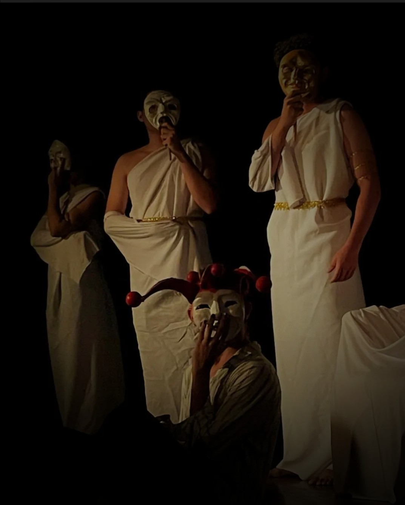
Acreditamos no teatro como ferramenta
de transformação social, capaz de
ensinar valores e inspirar pessoas.
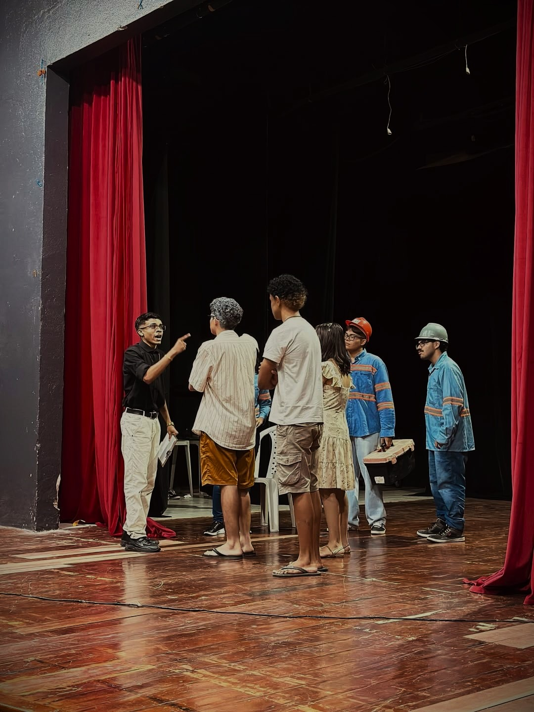
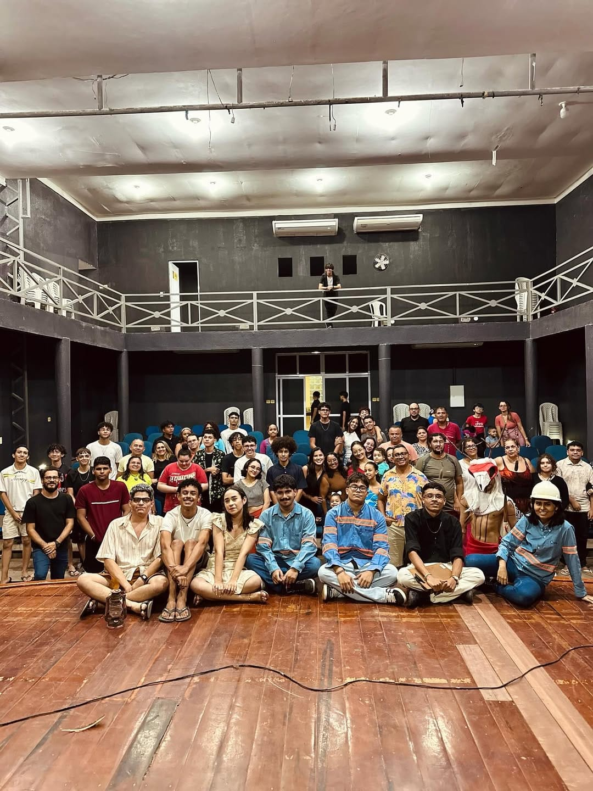
Fundação:
31 de janeiro de 2023 por jovens artistas em
Horizonte - CE.
Propósito:
Levar a arte teatral a todos os públicos,
despertando emoções e reflexões profundas
Missão:
Fortalecer o amor pela arte e desenvolver
novos talentos na comunidade.
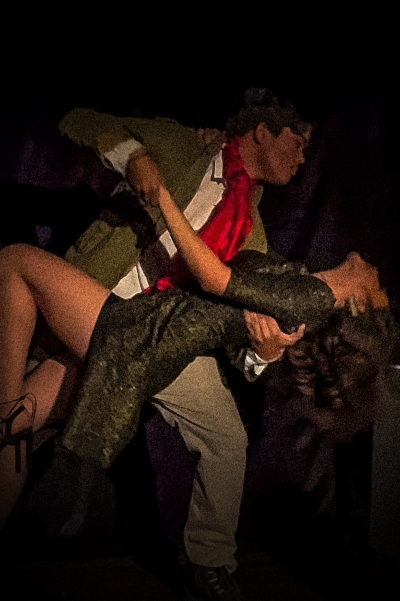
Mario Alvez - Diretor Geral
Huryel Campelo - Secretário
Iarley Barbosa - Diretor de Elenco
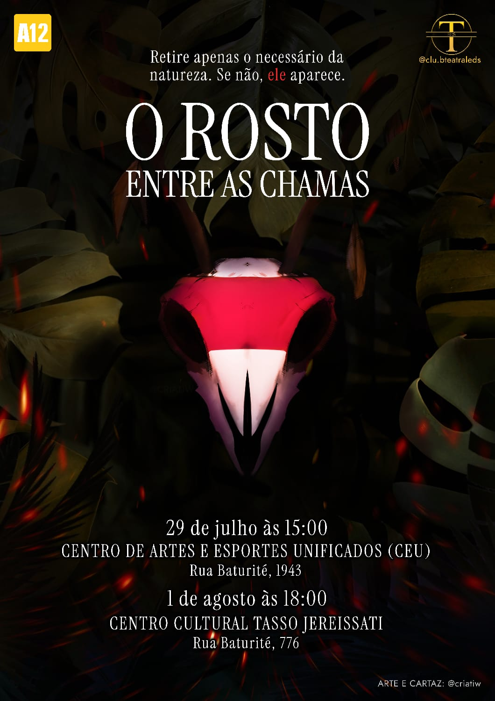
Roteiro: Huryel Campelo
Direção: Mário Alves
Duração 20 min (esquete)
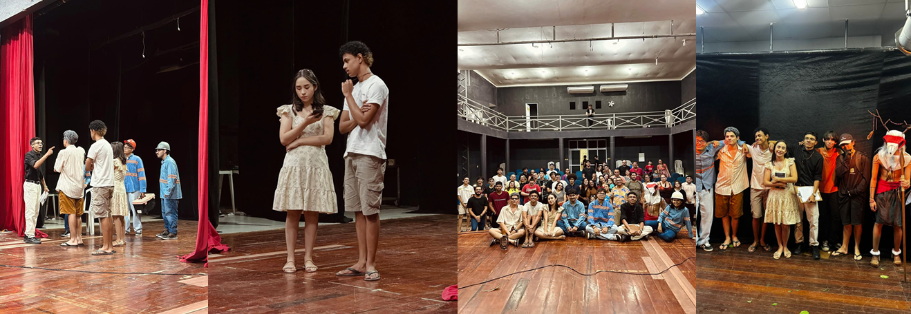
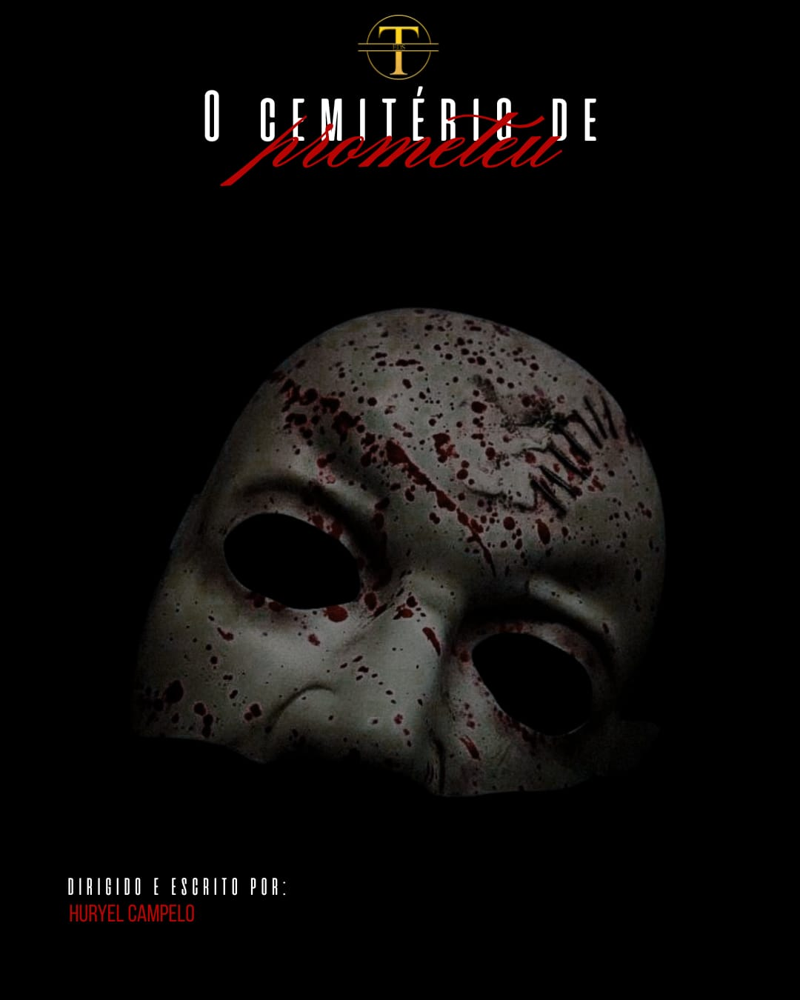
Roteiro: Huryel Campelo
Direção: Victória Braz
Duração 40min
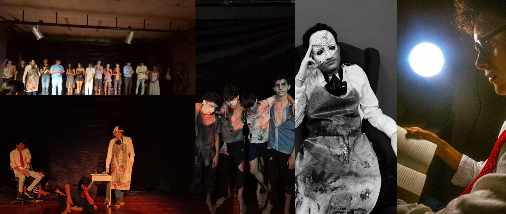
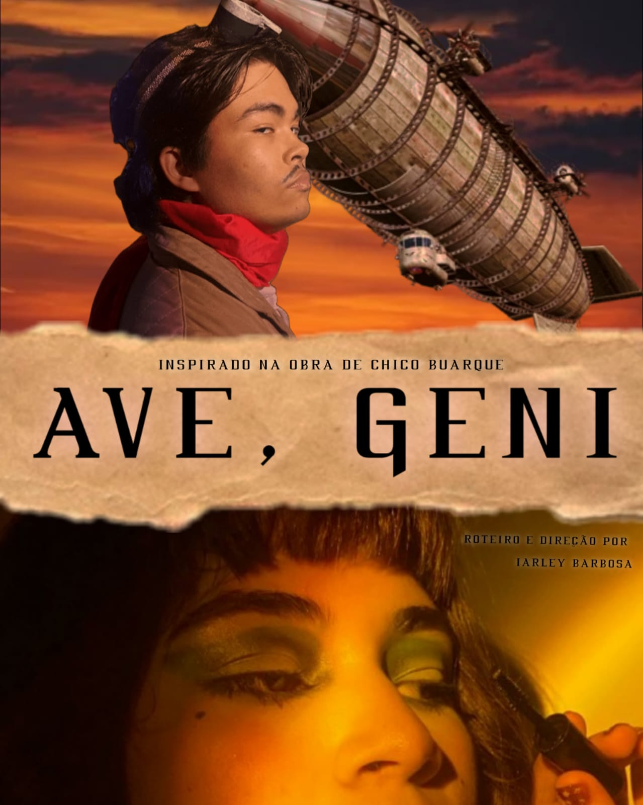
Roteiro: Iarley Barbosa
Direção: Iarley Barbosa
Duração 40min
Inspiração:
Chico Buarque
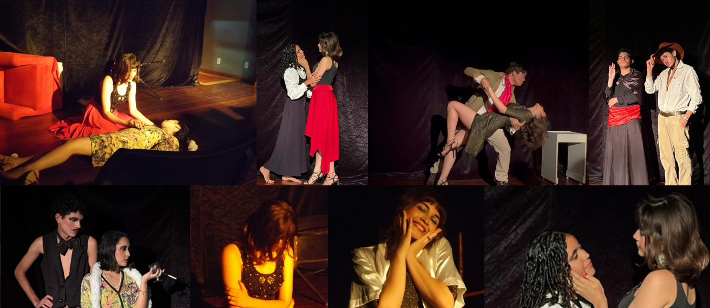
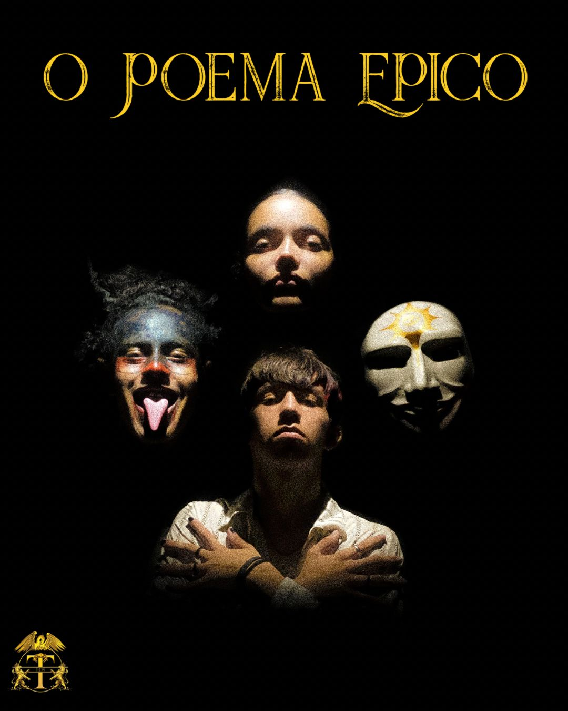
Roteiro: Huryel Campelo
Direção: Victória Braz
Duração 40min
Reeleitura de:
Bohemian Rhapsody
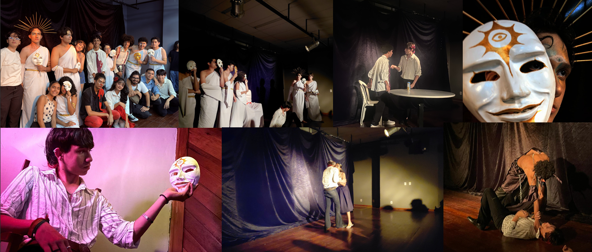